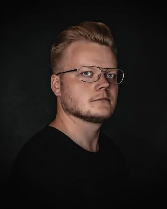

„Zahnersatz aus einer Hand —
kein Versand, keine Wartezeit, kein Telefonieren über mehrere Häuser."
Bei Dental Aesthetics fertigen wir Ihren prothetischen Zahnersatz im eigenen Meisterlabor. Das verkürzt Wege, beschleunigt Anpassungen und schafft eine direkte Qualitätskontrolle — vom ersten Abdruck bis zur fertigen Versorgung.

Zahntechniker mit mehr als zehn Jahren Berufserfahrung und seit Juli 2023 bei Dental Aesthetics. Er fertigt und betreut Ihren Zahnersatz und nimmt Ihre individuellen Wünsche persönlich auf.
Warum ein praxiseigenes Labor?
In vielen Zahnarztpraxen wird der Zahnersatz an externe Labore versandt — oft mit Wartezeiten von einer Woche oder mehr für jede Korrektur. In unserem Haus liegt zwischen Behandlungsstuhl und Labor nur eine Tür. Das hat handfeste Vorteile:
Kurze Wege
Anpassungen oft noch am selben Tag — keine Versandzeit, keine Verzögerung.
Direkte Abstimmung
Zahnarzt und Zahntechnik tauschen sich persönlich aus — kein Telefonieren über Distanz.
Qualitätskontrolle
Jedes Werkstück wird vor der Eingliederung direkt am Behandlungsstuhl geprüft und feinjustiert.
Individualität
Form, Farbe und Charakteristik werden persönlich abgestimmt — nicht aus dem Katalog.
Was wir in unserem Labor fertigen
Unser Leistungsspektrum umfasst die gesamte Bandbreite hochwertiger zahntechnischer Arbeiten:
Vollkeramik-Kronen
Hochästhetisch und biokompatibel — die natürliche Lösung für sichtbare Bereiche.
Brücken
Mehrgliedrige Versorgungen zum Schließen von Zahnlücken — verschraubt oder zementiert.
Inlays & Onlays
Hochwertige Einlagefüllungen aus Keramik — langlebige Alternative zu Kunststofffüllungen.
Veneers
Hauchdünne Keramikschalen für ein ästhetisch harmonisches Lächeln.
Implantat-Prothetik
Individuelle Abutments, Kronen und Brücken auf Implantaten — passgenau für Ihre Anatomie.
Teil- & Vollprothesen
Herausnehmbarer Zahnersatz mit ausgezeichnetem Tragekomfort und natürlicher Optik.
Aufbissschienen
Maßgefertigte Schienen bei Knirschen, CMD oder zur Kiefergelenk-Entlastung.
Provisorien
Temporäre Versorgungen für die Übergangsphase — funktional und ästhetisch.
Hinweis zur Implantatversorgung
Die Implantatkörper selbst (die künstlichen Zahnwurzeln) beziehen wir ausschließlich von zertifizierten Markenherstellern mit langjähriger klinischer Erfahrung. Die prothetische Versorgung auf diesen Implantaten — also Abutments, Kronen und Brücken — fertigen wir vollständig in unserem eigenen Labor. So profitieren Sie von der Sicherheit etablierter Implantatsysteme und der Individualität hauseigener Prothetik.
Unsere Materialien
Wir setzen ausschließlich auf hochwertige, klinisch bewährte Materialien — Ihre Gesundheit hat Priorität.
Zirkondioxid
Hochfeste, metallfreie Keramik mit hervorragender Biokompatibilität. Ideal für Kronen und Brücken — auch im sichtbaren Bereich.
Vollkeramik (Lithium-Disilikat)
Die ästhetische Premiumlösung für Frontzahnkronen, Veneers und Inlays. Lichtdurchlässig wie natürliche Zähne.
Edelmetalllegierungen
Bewährte Goldlegierungen für Kronen und Brücken in nicht sichtbaren Bereichen — besonders langlebig und gewebefreundlich.
Hochleistungs-Kunststoffe
Moderne Kompositmaterialien und PMMA für Provisorien, Schienen und teilweise auch definitive Versorgungen.
Digitaler Workflow
Wo es Ihnen Vorteile bringt, arbeiten wir digital: 3D-Scanner statt Abdruck mit Abformmaterial, computergestützte Konstruktion (CAD) und präzise Fräsmaschinen (CAM). Das ist nicht nur angenehmer für Sie — es führt auch zu millimetergenauen Passungen und schnellen Lieferzeiten. Traditionelle handwerkliche Schritte ergänzen den digitalen Workflow überall dort, wo Erfahrung und Fingerspitzengefühl unersetzlich sind.
Garantie & Qualität
Auf zahntechnische Arbeiten aus unserem Labor gewähren wir die gesetzlich vorgesehene Gewährleistung (in der Regel 2 Jahre auf prothetischen Zahnersatz nach § 136a SGB V). Sollte eine Versorgung wider Erwarten nicht halten, finden wir gemeinsam die passende Lösung — kurze Wege sind hier ein klarer Vorteil unseres Hauskonzepts.